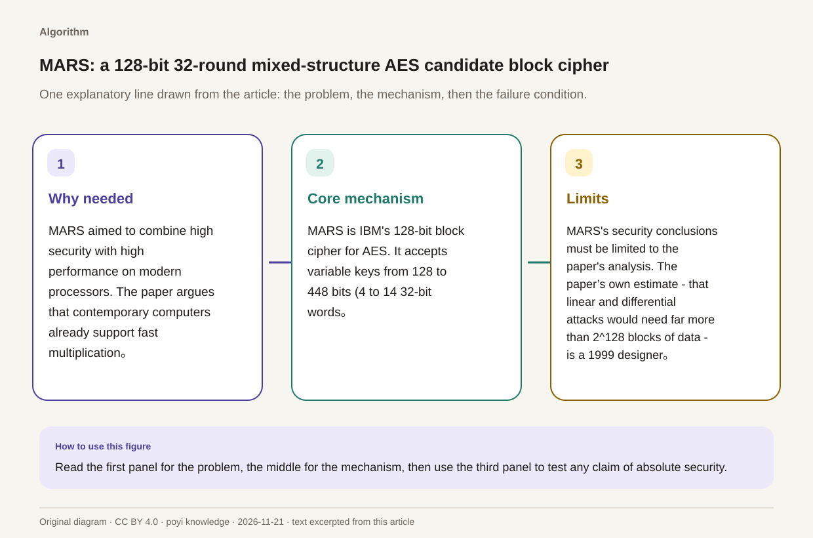
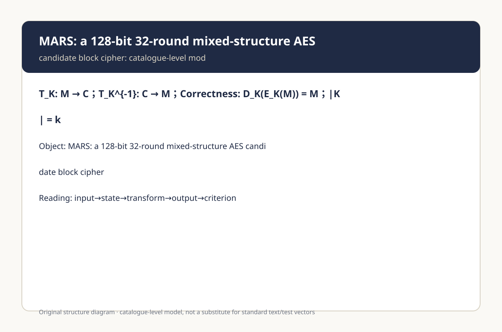

Principles
Algorithm: MARS (MARS 分组密码). MARS is IBM's 128-bit block cipher for AES. It accepts variable keys from 128 to 448 bits (4 to 14 32-bit words; AES requires 128/192/256 bits). It has 32 rounds in three phases: 8 rounds of unkeyed forward mixing, 16 keyed core rounds and 8 rounds of unkeyed backward mixing, surrounded by four initial key words and four final key words. The key expansion produces 40 32-bit words K0..K39; K0..K3 are added at the start, K4..K35 feed the 16 core rounds, and K36..K39 are subtracted at the end. The 128-bit plaintext is loaded little-endian into four 32-bit words D0..D3. The overall encryption structure is:
D_i = P_i + K_i i = 0..3
8 rounds of forward mixing (unkeyed)
16 core rounds (using K4..K35)
8 rounds of backward mixing (unkeyed)
C_i = D_i - K_{36+i} i = 0..3
Each forward-mixing round uses the four bytes of D0 to index S0/S1 and xors or adds the results into D1, D2 and D3, then rotates D0:
for i = 0..7:
D1 ^= S0[low byte of D0]
D1 += S1[2nd byte of D0]
D2 += S0[3rd byte of D0]
D3 ^= S1[high byte of D0]
D0 = ROR(D0, 24)
if i = 0 or 4: D0 += D3
if i = 1 or 5: D0 += D1
(D0, D1, D2, D3) = (D1, D2, D3, D0)
The core rounds use the E function. E takes one data word and two key words and produces three outputs L, M and R:
M = (in + K_{2i+4}) mod 2^32
R = ((in <<< 13) * K_{2i+5}) mod 2^32
L = S[M mod 512]
R = R <<< 5
r = R mod 32
M = M <<< r
L = L XOR R
R = R <<< 5
L = L XOR R
r = R mod 32
L = L <<< r
return (L, M, R)
<<< is a 32-bit left rotation and * is multiplication modulo 2^32; "the key words used for multiplication" must be odd and must not contain ten consecutive 0s or 1s, which the key expansion guarantees. The core round distributes E's outputs over the four words:
for i = 0..15:
(L, M, R) = E(D0, K_{2i+4}, K_{2i+5})
D0 = D0 <<< 13
D2 += M
if i < 8:
D1 += L
D3 ^= R
else:
D3 += L
D1 ^= R
(D0, D1, D2, D3) = (D1, D2, D3, D0)
The first eight and last eight core rounds target different words, which is part of MARS's mixed structure. The paper calls the 16 core rounds a type-3 Feistel network: each round uses one data word and two key words "to modify the other three data words". Backward mixing runs in the opposite direction and uses subtraction for some operations:
for i = 0..7:
if i = 2 or 6: D0 -= D3
if i = 3 or 7: D0 -= D1
D1 ^= S1[low byte of D0]
D2 -= S0[high byte of D0]
D3 -= S1[3rd byte of D0]
D3 ^= S0[2nd byte of D0]
D0 = D0 <<< 24
(D0, D1, D2, D3) = (D1, D2, D3, D0)
Key expansion starts from a 15-word temporary table T: the first n words are the user key (n=4..14), T[n]=n, and the rest are zero. Four iterations then run; each performs a linear transformation, four stirring rounds, and copies ten words into the next part of K:
for j = 0..3:
for i = 0..14:
T[i] ^= ((T[(i-7) mod 15] ^ T[(i-2) mod 15]) <<< 3) ^ (4*i + j)
repeat 4 times:
for i = 0..14:
T[i] = (T[i] + S[low 9 bits of T[(i-1) mod 15]]) <<< 9
for i = 0..9:
K[10*j + i] = T[(4*i) mod 15]
Finally the 16 multiplication keys K5, K7, ..., K35 are fixed. For each such K[i]:
j = K[i] mod 4
w = K[i] with both lowest bits set to 1
M_l = 1 iff w_l belongs to a run of at least 10 equal bits
and 2 <= l <= 30 and w_{l-1} = w_l = w_{l+1}
r = K[i-1] mod 32
p = B[j] <<< r
K[i] = w XOR (p AND M)
The fixed table B is {0xA4A8D57B, 0x5B5D193B, 0xC8A8309B, 0x73F9A978}, entries 265 through 268 of the S-box. This fix guarantees that the multiplication keys are odd and contain no ten consecutive 0s or 1s. The S-box is 512 32-bit words; the first 256 are S0 and the last 256 are S1. The paper says it is generated pseudorandomly from SHA-1: S[5i+j] comes from the j-th output word of SHA-1(5i, j, c1, c2, c3), with c1=0xB7E15162, c2=0x243F6A88 and a selected c3. The complete table is in Appendix A of the paper. The S-box contains no all-zero or all-one word; every two entries within S0 or S1 differ in at least three bytes; and there is no pair of equal, bitwise-complement or additive-inverse entries. Decryption is the exact inverse. It first adds K36..K39 back to the ciphertext, then undoes the eight backward-mixing rounds, the sixteen core rounds and the eight forward-mixing rounds, and finally subtracts K0..K3. Undoing backward mixing rotates the word array back, rotates D0 right by 24, then reverses the S-box updates and the optional subtractions; undoing a core round rotates the array back, rotates D0 right by 13, and uses the same E function to reverse the L/M/R additions and xors; undoing forward mixing subtracts D1/D3 first, then rotates D0 left by 24, and finally reverses the four S-box updates. This order cannot be swapped, because the carry in the additions and the rotations would not cancel.

Why it matters
MARS aimed to combine high security with high performance on modern processors. The paper argues that contemporary computers already support fast multiplication, data-dependent rotation and table lookup, so MARS does not use a pure Feistel or pure SP network; it combines 8 unkeyed forward-mixing rounds, 16 keyed core rounds and 8 unkeyed backward-mixing rounds. The outer layers provide rapid key and data diffusion, while the core provides the main cryptographic strength.
The designers estimated that MARS is more secure than three-key 3DES and that all known cryptanalysis, including linear and differential analysis, would require more than 2^128 data, making it infeasible on a 128-bit block. This is a 1999 designer estimate, not a formal proof against every attack model.
On performance, the paper reports about 65 Mbit/s on a 200 MHz Pentium-Pro and 85 Mbit/s on a 200 MHz PowerPC for its C implementation; dedicated hardware can achieve about a 10x speedup. These are 1999 implementation figures, not performance promises for current platforms. MARS's key-expansion cost is essentially independent of key length, so 128/192/256-bit keys encrypt at similar speeds.
MARS was selected as one of the five AES finalists in August 1999 but was not selected as AES. NIST ultimately chose Rijndael and published FIPS 197 on 26 November 2001; FIPS 197 was updated on 9 May 2023 as FIPS 197-upd1. MARS's 1999 revision includes a key-setup tweak accepted by NIST; this article's key expansion and vectors use the revised version.
For teaching, MARS is a case study in mixed structures: it separates unkeyed mixing layers from a keyed core, the core uses multiplication, data-dependent rotation and S-boxes, and the key expansion includes bit-level fixing. Its intermediate values and Expanded Key vectors are well suited to checking key expansion, byte order, rotation direction and the inverse order of additions and subtractions.
Applications
The author page supplies four test-vector files: ecb_ivt.txt gives encryption and decryption intermediate values for the three key lengths, ecb_vk.txt gives 576 variable-key vectors (each also printing the 40 expanded key words), ecb_vt.txt gives 384 variable-plaintext vectors, and ecb_tbl.txt gives 120 table tests covering S-box entries. This article reproduces:
- all 6 IVT blocks (one encryption and one decryption block for each of 128/192/256 bits), each with 35 intermediate values; this article checks only their plaintext and ciphertext, while key expansion is verified word by word through the 40 words of the VK vectors, not every printed intermediate line;
- all 576 VK vectors: the 40 Expanded Key words match verbatim, encrypting the zero plaintext gives the printed ciphertext, and decryption returns the zero plaintext;
- all 384 VT and 120 TBL vectors: encryption and decryption match the files.
Representative vectors:
128-bit, all-zero key and plaintext:
K = 00000000000000000000000000000000
P = 00000000000000000000000000000000
C = DCC07B8DFB0738D6E30A22DFCF27E886
192-bit, all-zero key and plaintext:
K = 000000000000000000000000000000000000000000000000
P = 00000000000000000000000000000000
C = F6B1B53C34B2B9E87F748482197E67E6
256-bit, all-zero key and plaintext:
K = 0000000000000000000000000000000000000000000000000000000000000000
P = 00000000000000000000000000000000
C = E998F63D39378523A951320451085D56
VK 128-bit vector 1:
K = 80000000000000000000000000000000
Expanded Key[0..7] =
7A690123 4A4CF6EE D1C145FD 4A929170
551A7316 D46B4D1F 6A68B2DD 52A45B5F
P = 00000000000000000000000000000000
C = B3E2AD5608AC1B6733A7CB4FDF8F9952
VT 128-bit vector 1 (zero key, plaintext with only the top bit set):
K = 00000000000000000000000000000000
P = 80000000000000000000000000000000
C = D962EFEBA75817BF6ED24BBBB5B7820D
These vectors cover all three key lengths; every VK and VT vector sets a single key or plaintext bit, so they include zero and non-zero keys and plaintexts, and the TBL vectors cover all 512 S-box entries. They are fixed-answer files from the authors submission rather than self-consistent encrypt-then-decrypt checks; only the submission directory page (file names and sizes) is retained here, so no byte-for-byte comparison against the vector contents is claimed.

Limits & attacks
MARS's security conclusions must be limited to the paper's analysis. The paper’s own estimate - that linear and differential attacks would need far more than 2^128 blocks of data - is a 1999 designer estimate, not a formal proof for 32-round MARS, and it does not guarantee that no new analysis will appear. This article does not cite unverified third-party attacks to claim that MARS has been broken or is absolutely secure.
At the implementation level, MARS uses a 512-word S-box lookup, 32-bit multiplication and data-dependent rotations. Table lookups create cache and timing side-channel risks; data-dependent rotations can behave differently across processors and compilers. This article's teaching implementation uses ordinary JavaScript arrays and bit operations; it is not constant-time, has no masking, key isolation or fault detection, and must not protect real data.
The bit-level fixing in the key expansion and the multiplication/rotation order in E are common implementation-error sources. Although the IVT files print intermediate values, this article checks only plaintext and ciphertext, not every IVT intermediate line; key-expansion correctness is verified word by word through the 40 words of the 576 VK vectors, while conformance also rests on the 384 VT and 120 TBL ciphertext comparisons.
Deployment scope also matters: author-supplied test vectors show conformance, not security; MARS is an AES candidate, not the AES standard; FIPS 197 specifies Rijndael only. MARS defines only a block cipher and supplies no mode of operation, IV management, padding, integrity protection, key agreement or side-channel defence.
History
MARS was designed by Carolynn Burwick, Don Coppersmith, Edward D'Avignon, Rosario Gennaro, Shai Halevi, Charanjit Jutla, Stephen M. Matyas Jr., Luke O'Connor, Mohammad Peyravian, David Safford and Nevenko Zunic of IBM and submitted as an AES candidate. The paper's revision date is 22 September 1999.
MARS has a mixed structure: unkeyed S-box mixing on the outside and 16 keyed core rounds in the middle. The designers explain that this layering lets the outer layers diffuse keys and data quickly while the core carries the main security analysis; it differs from both a pure Feistel network and a pure SP network.
On 11 August 1999, MARS was selected as one of the five AES finalists. NIST accepted a key-setup tweak; the author page supplies the new key-expansion pseudocode and new test vectors, and this article uses the revised version. AES ultimately chose Rijndael and published FIPS 197 on 26 November 2001; MARS was not selected as AES.
The author page also reports 1999 performance figures: about 65 Mbit/s on a 200 MHz Pentium-Pro, 85 Mbit/s on a 200 MHz PowerPC, and about a 10x hardware speedup. These numbers belong to that period's implementations, not today's benchmarks.
Worked example & verification
Worked example
Take one published or standard test vector, record the input, the ordered steps and the byte-exact output, then compare with an independent implementation. Where no citable numeric vector is available, the entry records only structural steps and does not invent an output.
References
- Wikipedia search entry for MARS 分组密码. https://zh.wikipedia.org/w/index.php?search=MARS%20%E5%88%86%E7%BB%84%E5%AF%86%E7%A0%81
- Handbook of Applied Cryptography (Menezes, van Oorschot, Vanstone). https://www.cacr.math.uwaterloo.ca/hac/